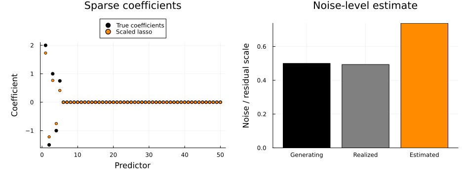

Scaled lasso
In a regression experiment we often need both a sparse coefficient estimate and a noise estimate. The noise level measures variation left unexplained by the fitted model. Scaled lasso estimates both together, without inserting a known noise standard deviation into its penalty level. The simulation below lets us compare both estimates with their generating values.

The scaled lasso of Sun and Zhang (2012) estimates the coefficients and the noise level together by minimizing
\[L(\beta, \sigma) = \frac{\|y - X\beta\|_2^2}{2n\sigma} + \frac{\sigma}{2} + \lambda_0 \|\beta\|_1, \qquad \sigma > 0.\]
For a fixed β with residual r = y - X*β ≠ 0, L(β, σ) - L(β, σ̂) = (σ - σ̂)²/(2σ) ≥ 0 at σ̂ = norm(r)/sqrt(n), and L(β, σ̂) = norm(r)/sqrt(n) + λ₀‖β‖₁. Hence a minimizer β̂ of the square-root lasso at the level λ = sqrt(n)*λ₀, together with σ̂ = norm(y - X*β̂)/sqrt(n), is a scaled-lasso solution when the residual of β̂ is nonzero. The package has no scaled-lasso function; this page shows the computation with SqrtLeastSquaresLoss, NormL1 and CDSolver, and what the solver's certificate says about the result. Penalty weights are not supported: the square-root lasso refuses a weighted NormL1, see Supported problems.
using LinearAlgebra, Random, ProximalBase, ProximalSolversThe problem
The data are those of the square-root lasso page: n = 200, p = 50, columns scaled to sum(abs2, X[:, j]) ≈ n, five nonzero coefficients and noise of standard deviation 0.5, from the same seed. The level is λ₀ = 1.1*sqrt(2 log(2p/0.05)/n); it does not use the noise level. The solver takes the unnormalized level λ = sqrt(n)*λ₀, which must be positive and finite. This example also chooses λ below λmax = ‖Xᵀy‖∞/‖y‖, as the square-root page does, so that β = 0 is not a minimizer; at or above λmax, β = 0 is a minimizer, which solve! accepts but need not return from every start (see the exact fits on the square-root page).
rng = Xoshiro(2026)
n, p = 200, 50
X = randn(rng, n, p)
X ./= sqrt.(sum(abs2, X; dims = 1) ./ n)
βtrue = [[2.0, -1.5, 1.0, -1.0, 0.75]; zeros(p - 5)]
y = X * βtrue .+ 0.5 .* randn(rng, n)
λ₀ = 1.1 * sqrt(2 * log(2p / 0.05) / n)
λ = sqrt(n) * λ₀
λmax = maximum(abs, X' * y) / norm(y)
println("λ₀ = ", λ₀, ", λ = ", λ, ", λmax = ", λmax)
@assert isfinite(λ) && λ > 0
@assert λ < λmaxλ₀ = 0.3032670766180517, λ = 4.288844127744892, λmax = 9.23587185986038Solving the square-root lasso
The solve is the one of the square-root lasso page: cyclic coordinate descent without momentum, started at zero. The result reports the objective value P(β̂) = norm(y - X*β̂) + λ*norm(β̂, 1) (minimum), whether a duality certificate was proved (converged), the proved bound on the relative gap (gap) and the number of passes.
β = zeros(p)
result = solve!(β, SqrtLeastSquaresLoss(y, X), NormL1(λ), CDSolver(order = :cyclic, momentum = false))
println("minimum = ", result.minimum, ", converged = ", result.converged, ", gap = ", result.gap,
", passes = ", result.passes)
@assert result.convergedminimum = 31.36001828547866, converged = true, gap = 8.146670197793017e-8, passes = 18The noise level
The residual of the returned point is computed from X, y and β. It is nonzero here, so σ̂ = norm(r)/sqrt(n) is the minimizer of L(β̂, ·) over σ > 0. The simulated noise level is 0.5, and the residual of the true coefficients gives norm(y - X*βtrue)/sqrt(n); both are printed for comparison and are not checked.
r = y - X * β
σ̂ = norm(r) / sqrt(n)
println("norm(r)/norm(y) = ", norm(r) / norm(y))
println("σ̂ = ", σ̂, " (simulated noise level 0.5, norm(y - X*βtrue)/sqrt(n) = ",
norm(y - X * βtrue) / sqrt(n), ")")
@assert norm(r) > 0
@assert isfinite(σ̂) && σ̂ > 0norm(r)/norm(y) = 0.2629312343634837
σ̂ = 0.7379366279581027 (simulated noise level 0.5, norm(y - X*βtrue)/sqrt(n) = 0.4934961474951168)Reading the figure
The coefficient panel shows shrinkage and the predictors retained by this fit. The right panel compares the generating noise standard deviation, the realized noise norm divided by √n, and σ̂. They need not coincide: residuals include error from estimating and shrinking coefficients. These bars describe one simulated sample, not confidence intervals.
using Plots
coefficient_panel = scatter(1:p, βtrue; label="True coefficients", color=:black,
markersize=4, xlabel="Predictor", ylabel="Coefficient", title="Sparse coefficients")
scatter!(coefficient_panel, 1:p, β; label="Scaled lasso", color=:darkorange, markersize=3)
noise_panel = bar(["Generating", "Realized", "Estimated"],
[0.5, norm(y - X * βtrue) / sqrt(n), σ̂]; color=[:black, :gray, :darkorange],
label=false, ylabel="Noise / residual scale", title="Noise-level estimate")
plot(coefficient_panel, noise_panel; layout=(1, 2), size=(940, 380),
legend=:outertop, bottom_margin=6Plots.mm, left_margin=6Plots.mm)
savefig("scaled_lasso.svg")
nothingThe joint objective
The function below evaluates L in ordinary arithmetic. At σ̂ it equals P(β̂)/√n, the objective that the solver reports divided by √n. The two are computed in different orders, so they agree up to rounding; the tolerance 1e-10 is far above the rounding of a sum of a few hundred terms in Float64. At 0.9σ̂ and 1.1σ̂ the value is larger, by (σ - σ̂)²/(2σ) as above.
joint_objective(X, y, λ₀, β, σ) = sum(abs2, y - X * β) / (2 * size(X, 1) * σ) + σ / 2 + λ₀ * norm(β, 1)
L̂ = joint_objective(X, y, λ₀, β, σ̂)
println("L(β̂, σ̂) = ", L̂, ", minimum/sqrt(n) = ", result.minimum / sqrt(n))
@assert isapprox(L̂, result.minimum / sqrt(n); rtol = 1e-10)
for σ in (0.9σ̂, 1.1σ̂)
Lσ = joint_objective(X, y, λ₀, β, σ)
println("L(β̂, ", σ / σ̂, "σ̂) - L(β̂, σ̂) = ", Lσ - L̂, " (formula: ", (σ - σ̂)^2 / (2σ), ")")
@assert Lσ > L̂
endL(β̂, σ̂) = 2.2174881587796085, minimum/sqrt(n) = 2.2174881587796085
L(β̂, 0.9σ̂) - L(β̂, σ̂) = 0.004099647933100581 (formula: 0.004099647933100566)
L(β̂, 1.1σ̂) - L(β̂, σ̂) = 0.003354257399809768 (formula: 0.0033542573998095646)Independent stationarity and objective checks
At a nonzero residual, the profiled loss has gradient -X'r/(√n ‖r‖). Its lasso conditions use λ₀: a nonzero coefficient satisfies gradⱼ + λ₀ sign(βⱼ) = 0, while a zero coefficient needs |gradⱼ| ≤ λ₀. The derivative in the noise scale is 1/2 - ‖r‖²/(2nσ̂²), which should also be zero. These checks use the data, not the solver's convergence flag. We also evaluate a feasible square-root-lasso dual point to obtain an independent relative objective-gap bound, up to floating-point rounding.
grad = -(X' * r) / (sqrt(n) * norm(r))
kkt = maximum(iszero(β[j]) ? max(abs(grad[j]) - λ₀, 0.0) :
abs(grad[j] + λ₀ * sign(β[j])) for j in eachindex(β))
scale_stationarity = abs(0.5 - sum(abs2, r) / (2n * σ̂^2))
θ = (min(1.0, λ * norm(r) / norm(X' * r, Inf)) / norm(r)) * r
primal = norm(r) + λ * norm(β, 1)
dual = dot(θ, y)
@assert norm(θ) <= 1 + 1e-12 && norm(X' * θ, Inf) <= λ * (1 + 1e-12)
@assert dual > 0 && isapprox(primal, result.minimum; rtol=1e-10)
independent_gap = (primal - dual) / dual
@assert -1e-12 <= independent_gap <= 1e-4
@assert kkt / λ₀ <= 1e-5 && scale_stationarity <= 1e-12
println("independent KKT / λ₀ = ", kkt / λ₀, "; scale stationarity = ", scale_stationarity,
"; independent relative gap = ", independent_gap)independent KKT / λ₀ = 1.3947293748383716e-7; scale stationarity = 5.551115123125783e-17; independent relative gap = 8.146640984068478e-8What the certificate says
The infimum of L over β and σ > 0 is P*/√n, where P* is the minimum of the square-root objective, because minimizing over σ first gives P(β)/√n for every β with a nonzero residual and λ₀‖β‖₁ (approached as σ ↓ 0) for an exact fit. For y ≠ 0 and λ > 0 the minimum P* is positive, since P(β) = 0 forces y - X*β = 0 and β = 0. A run with converged = true proves (P(β̂) - P*)/P* ≤ gap and, when the residual of β̂ is nonzero so that σ̂ > 0, (L(β̂, σ̂) - inf L)/inf L ≤ gap as well, with gap ≤ 1e-4; both hold for this page's data, where y ≠ 0 and the residual was checked above. For y = 0, P* = 0 is attained at β = 0 with residual 0, so there is no relative gap and no σ̂ (started at 0, the solver certifies β = 0 with gap = 0; from a nonzero start, the fallback after a stop without a certificate can reach β = 0, which is then certified with gap = 0, and it can also end without a certificate); the exact-fit discussion below applies. The bound on the objective value does not say how far σ̂ is from a minimizing σ. The square-root page checks this certificate independently from X, y, λ and β. A run with converged = false and gap = NaN has no certificate: its σ̂ is then, where the residual of that point is nonzero, the minimizer of L(β, ·) over σ at that point, and the pair is not presented as a scaled-lasso solution.
println("relative gap bound for L(β̂, σ̂): ", result.gap)
@assert 0 <= result.gap <= 1e-4relative gap bound for L(β̂, σ̂): 8.146670197793017e-8Exact fits
Take the second exact-fit case of the square-root page, X = [1 2; 0 1], y = (1, 0), λ = 0.1, started at 0, so n = 2 and λ₀ = 0.1/sqrt(2). Coordinate descent stops at β = (1, 0) without a certificate, and the fallback after that stop certifies this point (see Limitation: exact fits); its stored residual is r = 0.
X2 = [1.0 2.0; 0.0 1.0]
y2 = [1.0, 0.0]
λ2 = 0.1
λ₀2 = λ2 / sqrt(2)
β2 = zeros(2)
r2 = solve!(β2, SqrtLeastSquaresLoss(y2, X2), NormL1(λ2), CDSolver(order = :cyclic, momentum = false))
println("β = ", β2, ", converged = ", r2.converged, ", gap = ", r2.gap, ", residual = ", y2 - X2 * β2)
@assert r2.converged && 0 <= r2.gap <= 1e-4
@assert iszero(y2 - X2 * β2)β = [1.0, 0.0], converged = true, gap = 6.188490796098803e-6, residual = [0.0, 0.0]At a point with r = 0, L(β, σ) = σ/2 + λ₀‖β‖₁ decreases strictly as σ decreases and stays above λ₀‖β‖₁ = P(β)/√n, the value it approaches as σ ↓ 0. So L(β, ·) has no minimizer σ > 0 for this candidate, and no positive σ̂ is reported for it. The decreasing values below are computed with the joint_objective above.
σs = [1.0, 0.1, 0.01, 0.001]
Ls = [joint_objective(X2, y2, λ₀2, β2, σ) for σ in σs]
println("λ₀‖β‖₁ = ", λ₀2 * norm(β2, 1), ", L(β, σ) for σ = ", σs, ": ", Ls)
@assert issorted(Ls; rev = true) && allunique(Ls)
@assert all(>(λ₀2 * norm(β2, 1)), Ls)λ₀‖β‖₁ = 0.07071067811865475, L(β, σ) for σ = [1.0, 0.1, 0.01, 0.001]: [0.5707106781186547, 0.12071067811865475, 0.07571067811865476, 0.07121067811865475]The run certifies the square-root objective P(β), but at this point the minimum of L(β, ·) over σ > 0 is not attained, so the point is not presented with a σ̂, and not as a scaled-lasso solution. What it shows is about this β only. Whether the joint minimum of L over β and σ > 0 is attained is not decided by this point, because another square-root lasso minimizer with a nonzero residual may exist. A very small but nonzero residual is not an exact fit: then σ̂ = norm(r)/sqrt(n) > 0 is the minimizer of L(β, ·).
Statistical limitations
The noise model is additive and homoscedastic. Misspecification or omitted predictors can inflate the residual scale, and the penalty here is fixed rather than tuned. A small objective gap does not certify recovery of coefficients or the noise variance. Exact fits need the separate treatment above because the scale parameter is constrained to be positive.
What we learned
Profiling the positive noise scale turns scaled lasso into square-root lasso. The residual determines its noise estimate when it is nonzero. Comparing the recovered coefficients and noise scale with the simulation truth exposes shrinkage; objective and stationarity checks answer the separate question of numerical accuracy.
The figure is generated from this script during the documentation build. Run the script alone for the same seeded calculations and checks without loading Plots.